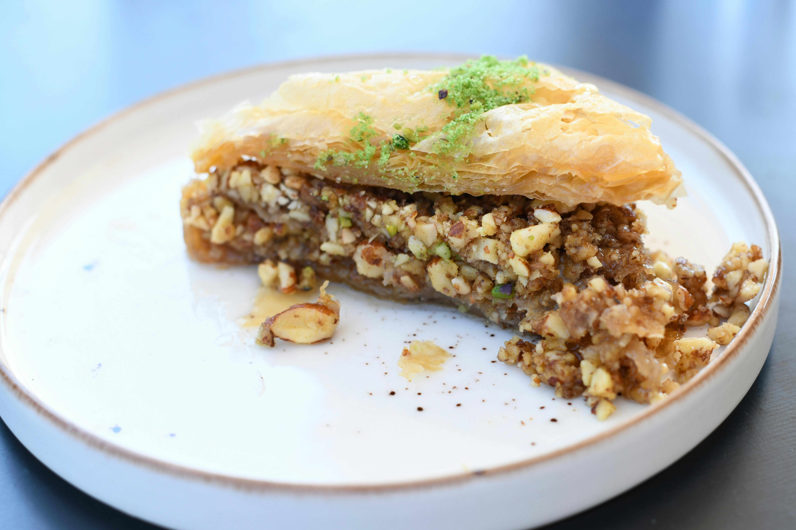

Baklava

Photo by Rosa Stone (CC0 1.0)
Description
Crisp, buttery layers of golden filo meet a luscious filling of spiced nuts & sweet syrup in this classic baklava.
Each bite is a perfect harmony of crunch & melt, rich & aromatic. Whether served as a show-stopping dessert or a little indulgence with coffee, baklava is pure decadence.
Ingredients
- 375g (3 3/4 cups) walnuts
- 200g (1 1/4 cups) blanched whole almonds
- 1/3 cup caster sugar
- 3/4 tsp ground cinnamon
- 125g unsalted butter, melted
- 375g packet filo pastry
- Ground pistachios for garnish
Method
- Prepare baklava syrup
- In a food processor, blitz walnuts until finely chopped. Transfer to large bowl.
*Note: Do not over-process nuts as they will become oily
- Repeat with almonds, transferring in to the same bowl
- Add sugar & cinnamon to nut mixture. Combine well
- Brush the base and sides of an 18x28x3.5cm pan with the melted butter
- Unroll filo on to a large chopping board, placing the pan on top
- Cut the filo around the pan. Discard the trimmings
- Using 1 sheet of filo at a time, brush with butter and place in pan. Create 9 layers of filo
- Evenly scatter half the nut mixture on top of filo
- Repeat the buttering & layering of the filo for another 6 sheets, placing them over the nut mixture
- Evenly scatter the remaining nut mixture on top of filo
- Repeat the buttering & layering of a final 6 sheets of filo, laying them on top of the nut mixture. Using your hands, press the baklava to slightly compress
- Brush the top well with butter
- Preheat oven to 160c (fan-forced). Place the baklava in freezer for 10 minutes
- Lightly score the top few layers of the baklava in to diamond shapes
- Bake for 35 minutes. If the pastry is over-browning, cover with baking paper
- Pour syrup over baklava as soon as removed from oven. Let stand for 2 hours or until syrup is absorbed and baklava is cool
- Cut baklava in to diamond pieces, cutting along score marks made earlier
- Garnish with ground pistachios
- Baklava will keep for up to 1 week, covered & placed in refrigerator